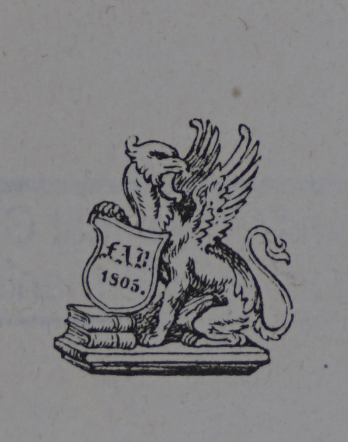
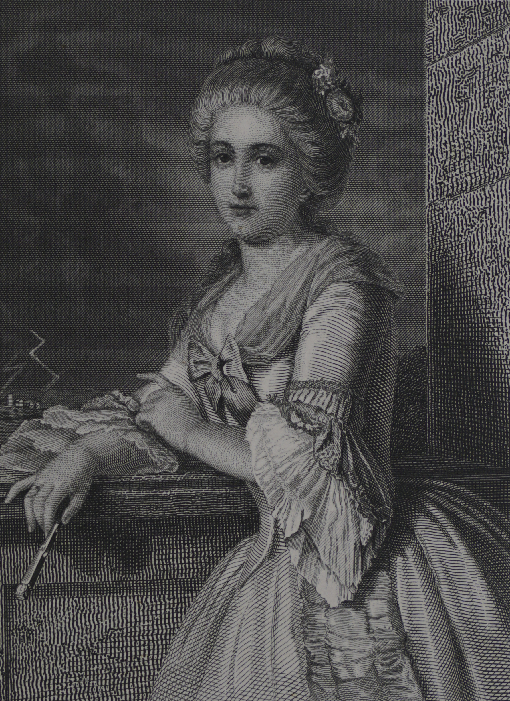
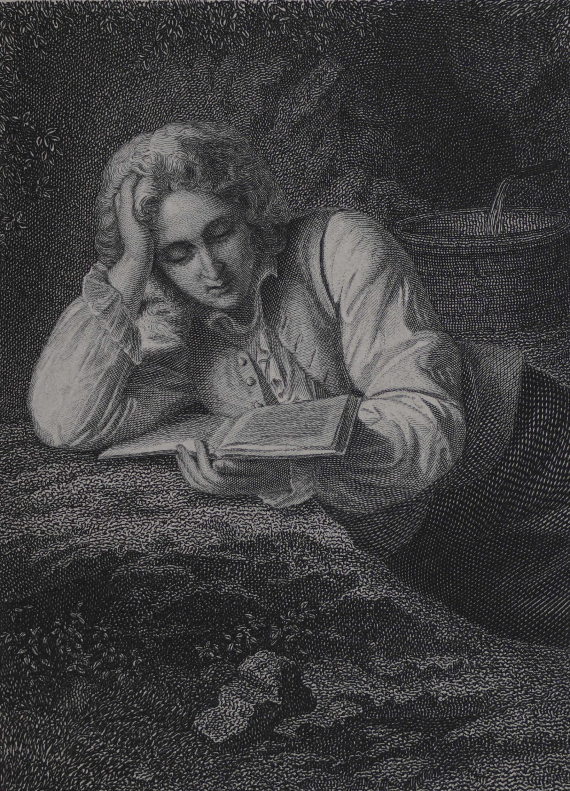
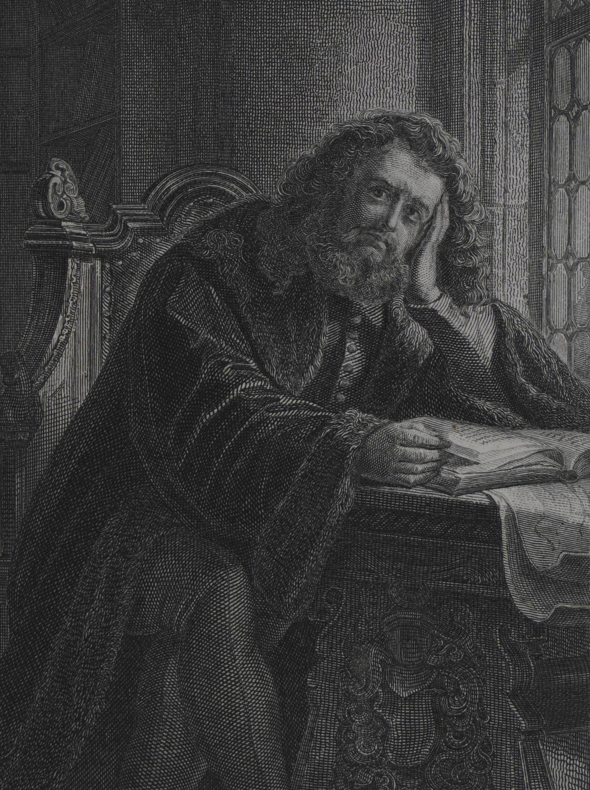
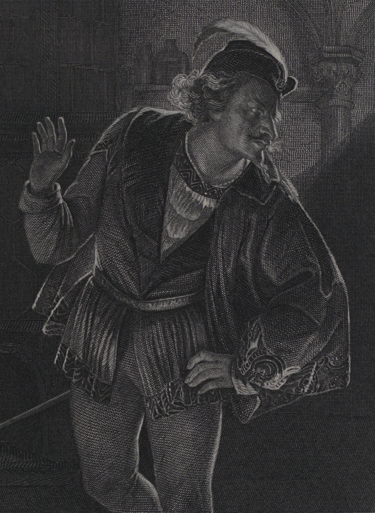
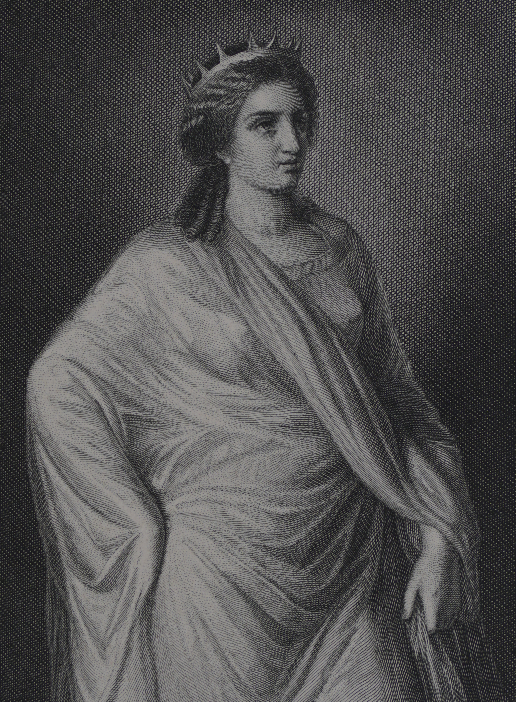

folio bc_f_o
Information about the formatting of the text
Words in old orthography are marked in bold and the color green.
Words in new orthography are marked in italic and the color red.
Words that are archaic are underlined and in the color purple.
Transcription
folio bc_f_i
FACHBIBLIOTHEK FÜR GERMANISTIK AN
DER KARL-FRANZENS-UNIVERSITÄT GRAZ
folio 000r

Fr. Pecht gez.
Goethe.
F. A. Brockhaus' Geogr.-artist. Anstalt, Leipzig.
folio 001r
Goethe-Galerie.
Charaktere aus Goethe's Werken.
Octav=Ausgabe
Zweite Auflage.

Leipzig:
F. A. Brockhaus.
1877.
428
G 599
P 365
folio 001v
Karl-Franzens-Universität Graz
Fachbibliothek für Germanistik
Inv.-Nr. 29827
2.12.89
Druck von F. A. Brockhaus in Leipzig
folio 002r
Verzeichniß Verzeichnis der Abbildungen.
|
Fr. Pecht gez. |
|
|---|---|
|
Goethe in Rom. |
Fr. Pecht gez. |
|
Frau Rath Goehte. |
Fr. Pecht gez. |
|---|---|
|
Cornelie Goethe. |
Fr. Pecht gez. |
|
Friederike. |
Fr. Pecht gez. |
|
Lili. |
Fr. Pecht gez. |
|
Johann Heinrich Merck. |
Fr. Pecht gez. |
|
Götz von Berlichingen. |
Fr. Pecht gez. |
|---|---|
|
Elisabeth. |
Fr. Pecht gez. |
|
Maria. |
Fr. Pecht gez. |
|
Franz von Sickingen. |
Fr. Pecht gez. |
|
Adelheid. |
Fr. Pecht gez. |
|
Fr. Pecht gez. |
|
|---|---|
|
Fr. Pecht gez. |
|
Clavigo. |
Fr. Pecht gez. |
|---|---|
|
Marie Beaumarchais. |
Fr. Pecht gez. |
|
Beaumarchais. |
Fr. Pecht gez. |
|
Carlos. |
Fr. Pecht gez. |
|
Marianne. |
Fr. Pecht gez. |
|---|
|
Stella. |
Fr. Pecht gez. |
|---|---|
|
Lucie. |
Fr. Pecht gez. |
folio 002v
Verzeichniß Verzeichnis der Abbildungen.
|
Graf Egmont. |
Fr. Pecht gez. |
|---|---|
|
Clärchen. |
Fr. Pecht gez. |
|
Wilhelm von Oranien. |
Fr. Pecht gez. |
|
Margarethe von Parma. |
Fr. Pecht gez. |
|
Machiavell. |
Fr. Pecht gez. |
|
Orest. |
Fr. Pecht gez. |
|---|---|
|
Iphigenie. |
A. v. Ramberg gez. |
|
Torquato Tasso. |
Fr. Pecht gez. |
|---|---|
|
Leonore von Este. |
Fr. Pecht gez. |
|
Antonio. |
Fr. Pecht gez. |
|
Leonore Sanvitale. |
Fr. Pecht gez. |
|
Fr. Pecht gez. |
|
|---|---|
|
Fr. Pecht gez. |
|
|
Fr. Pecht gez. |
|
|
Fr. Pecht gez. |
|
|
Fr. Pecht gez. |
|
Wilhelm Meister. |
Fr. Pecht gez. |
|---|---|
|
Marianne. |
Fr. Pecht gez. |
|
Philine. |
Fr. Pecht gez. |
|
Die Gräfin. |
Fr. Pecht gez. |
|
Der Hafner. |
Fr. Pecht gez. |
|
Mignon. |
Fr. Pecht gez. |
|
Hermann. |
Fr. Pecht gez. |
|---|---|
|
Dorothea. |
Fr. Pecht gez. |
|
Eugenie. |
Fr. Pecht gez. |
|---|
|
Ottilie. |
Fr. Pecht gez. |
|---|---|
|
Eduard. |
Fr. Pecht gez. |
|
Charlotte. |
Fr. Pecht gez. |
|
Benvenuto Cellini. |
Fr. Pecht gez. |
|---|
folio 003r
Goethe-Galerie.
folio 003v
folio 004r
Goethe.
Sehen wir im jungen Goethe den Apoll verkörpert,
wie er
mit begeisterten Blicken die goldene Leier rührt, so scheint im
gealterten Zeus Kronios selbst in seiner majestätischen Ruhe
wiedererstanden zu sein. Der ambrosischen Locken dunkele dunkle Fülle,
die des jugendlichen Dichters Haupt beschattete, sie ist vor der
machtvollen königlichen Stirn zurückgewichen; das strahlende
Auge, das alle Schönheit der Welt so durstig in sich trank,
dessen verzehrendes Feuer die Herzen aller Frauen höher schlagen
machte, wenn sein Strahl sie traf, es leuchtet noch in alter
Glut, aber in durchdringender Klarheit, es blitzt auch zuweilen
in vernichtender Schärfe; jener Mund, der so süße Lieder
sang, den alle Grazien umschwebten, der in unersättlicher
Schaffenslust zuckte, er ist ernst und schweigsam geworden, es
ist eine gehaltene Kraft, eine ungestillte Sehnsucht darin, die
uns sagen, daß dass dieser Mann gleich Faust niemals aufhören
wird, sich strebend zu bemühen, daß dass er die Lösung der Räthsel Rätsel
des Daseins unaufhörlich versucht, wiewol wiewohl ihm auch bewußt bewusst
ist, daß dass er sie nie vollständig erreichen kann, daß dass sein letztes
Wort noch ein Ruf nach „mehr Licht" sein wird!
Leben heißt leiden, auch bei dem Glücklichsten, wie Goethe
sicherlich deren einer war, da ihn wol wohl nicht der Schmerz, aber
doch jene Misère des Lebens verschonte, die Schiller so früh
erdrückt hat, und so sehen wir denn auch in seinem Antlitz
wol wohl die Narben ernster Wunden eingegraben, aber wenig=
stens keine des täglichen kleinen Aergers Ärgers, wie bei den meisten
Menschen. Es hat hier keine Säure des Gemeinen sich an=
gesetzt, kein fressend Gift hat seine tiefen Spuren durch das
herrliche Antlitz verwüstend gezogen. Jene heitere, prächtige,
glatte Stirn, hinter der sich die goldenen Träume des Jünglings
woben, die Zeit hat sie gefurcht, aber sie hat ihr an stolzer
folio 004v
Goethe.
Majestät zugelegt, was sie ihr an sonnigem Schönheitsglanze
nahm; aus dem begeisterten, vom Genius trunkenen Dichter
ist ein mächtiger Geisterfürst geworden; bezauberte uns der eine,
so erfüllt uns der andere mit scheuer Ehrfurcht; das dämonische
Wesen des Genius wirkt noch verstärkt, aber auch veredelt auf
uns. Schien der Jüngling den Himmel zu stürmen, so scheint
der alternde Mann ihn bereits erobert zu haben und, im
Besitz desselben gesichert durch seine Blitze, jeden Eindringling
ruhig abzuweisen.
Sehen wir im ersten die poetische Inspiration personificirt personifiziert,
so scheint die Weisheit selber auf der Stirn des Mannes zu
thronen, überall ist das Sinnliche dem Sinn, die Ahnung
der Forschung gewichen, jenes tiefe Naturgefühl dem Streben,
den Zusammenhang aller Dinge zu ergründen; die Philosophie
hat mit der Poesie die Plätze getauscht, ohne daß dass die eine der
andern vollständig gewichen wäre, denn das Bewunderungs=
würdigste an Goethe ist immer die Universalität dieses Geistes,
dem nichts fremd zu bleiben scheint, was jemals die Welt be=
wegt, die Menschen durchzuckt hat. Von der Glut des Jüng=
lings ist nur die schöne Wärme übrig geblieben, weises Maß
hat die Frische ersetzt, die höchste Kunst ist an die Stelle der
unmittelbaren Natur getreten, die stürmende Leidenschaft mit
ihrer hinreißenden Beredsamkeit, sie hat den Platz der geheimniß=
vollen geheimnisvollen, tiefsinnigen Symbolik geräumt, der frische Naturlaut
weicht der vollendeten Form.
Der Weg, den der Dichter Goethe durchmessen hat, ist
ein ungeheuerer, und wenn unsere Sympathie der zauberischen
Gewalt seiner Jugendwerke zugewendet bleiben wird, so folgt
unsere Bewunderung doch immer noch dem Idealismus seines
Alters. Denn das ist das Merkwürdige dieses Geistes, daß dass
er, vom schärfsten, schonungslosesten künstlerischen Realismus
ausgehend, seine Werke allmählich mit immer mehr Idealität
durchdringt, bis diese zuletzt eine fast einseitige Herrschaft über
seine Production Produktion gewinnt, während umgekehrt der Mensch in
ihm den entgegengesetzten Weg von der schrankenlosesten Sub=
jectivität Subjektivität bis zur klarsten objectiven objektiven Ruhe durchmißt durchmisst.
Man lernt nie aus an dieser reichen Natur, und es gew=
ährt ein unerschöpfliches Vergnügen, den Wegen nachzuspüren,
welche die verschiedenen Fähigkeiten derselben gingen, und die
folio 005r
Goethe.
eigenthümlichen eigentümlichen Mischungen zu betrachten, die sie miteinander
eingehen, dem Gesetze folgend, das er selber in den „Wahl=
verwandtschaften" mit so unübertrefflicher Meisterschaft geschildert.
Es spiegelt dieses Goethe'sche Geistesleben uns gewissermaßen
das der ganzen Menschheit in seiner unerschöpflichen Mannich=
faltigkeit Mannigfaltigkeit, wenn wir nach jenen ersten Werken, die uns, wie
„Die Mitschuldigen", „Götz", „Werther", „Clavigo", den
unmittelbarsten Naturlaut, den Schrei und Sturm der Leiden=
schaft mit so durchaus realistischer Kraft schildern, also nur den
Drang der Natur befriedigen, allmählich das Bedürfniß Bedürfnis der er=
höhten Form stärker werden sehen, demnach die Cultur Kultur, die
Freude an der Kunst an sich auftreten sehen, wenn sie auch
noch durchaus auf der Basis der Natur ruht, immer noch
durchaus individualisirend individualisierend und realistisch verfährt wie in "Eg=
mont", „Tasso", „Faust", bis die künstlerische Vollendung
der Form mit der höchsten Naturwahrheit in „Iphigenie"
und „Hermann und Dorothea“ ihren Triumph feiern, sich
aufs vollständigste durchdringen.
Von da an aber beginnt sich der Realismus bei Goethe
ganz in seine wissenschaftlichen Arbeiten zu flüchten — wie
denn die Wissenschaft auch in der Culturgeschichte Kulturgeschichte überall Kunst
und Poesie verdrängt, ihnen wenigstens nachfolgt —, die poet=
ischen Arbeiten werden jetzt immer idealisirender idealisierender, die Form
wird zuletzt alles, wie bei der „Natürlichen Tochter“, wo die
Gestalten fast aller Individualität entbehren und wenig mehr
als blasse Schemen, Abstracta Abstrakta übrig bleiben, oder wie im
zweiten Theil Teil des „Faust“, wo sie in Symbolik aufgelöst wer=
den, während sie im ersten noch die größte Lebensfülle zeigen.
Dafür entschädigt uns die tiefsinnige Weisheit, die ihnen der
Dichter in den Mund legt und die er der Wissenschaft, der
Philosophie, dem Studium des Lebens verdankt; wir glauben
an ihn, wenn wir längst an seine Figuren zu glauben auf=
gehört haben. Daneben aber macht diese Fähigkeit der scharfen
Beobachtung nun auf einmal die überraschendsten und folgen=
reichsten Entdeckungen in den Naturwissenschaften; der Reali=
smus, den er der Dichtung entzieht, kommt ihm hier auf das
merkwürdigste zugute. Das alles aber spielt nicht etwa blos bloß
hintereinander her in seinem Leben, sondern lange Zeit auch
nebeneinander; denn wie nahe liegen nicht „Hermann und
folio 005v
Goethe.
Dorothea" und „Die natürliche Tochter“ der Zeit nach bei
ihm zusammen, und wie bald wird nicht diese wieder von den
durch das feinste Naturstudium getragenen „Wahlverwandtschaft=
en" gefolgt, die neben der Formvollendung jener uns wieder
ein sehr loses künstlerisches Gefüge zeigen. So überrascht er
uns immer wieder durch neue Wendungen. Während andere
Künstler mit früh angeeigneter Meisterschaft gleich Shakspeare,
Walter Scott uns eine lange Reihe gleichartiger Productionen Produktionen
geben, in denen mehr oder weniger immer der ganze Mensch
zu erkennen ist, so wird bei ihm eine jede wieder neugeartet,
bezeichnet eine neue Phase in seinem Leben, spiegelt aber nur
einen einzelnen Theil Teil seiner künstlerischen Persönlichkeit wider
und gibt uns so ewig neue Räthsel Rätsel. Immer werden wir
wieder zu neuer Bewunderung hingerissen durch den ungeheuern
Reichthum Reihtum eines Geistes, der ein größeres Gebiet zu umfassen
und zu durchdringen vermochte, als bisher irgendeinem Sterb=
lichen vergönnt ward. Wir wüßten wüssten unter den Alten nur
einen, der ihm an Universalität des Geistes und gleichzeitiger
Meisterschaft in einzelnen Feldern der Production Produktion an die Seite
zu stellen sein möchte: Leonardo da Vinci, obgleich ihn auch
dieser an ungeheuerer ungeheurer Wirksamkeit auf die Bildung seiner Na=
tion nicht entfernt erreicht.
folio 039r
Fr. Pecht gez.
Lotte.
F. A. Brockhaus' Geogr.-artist. Anstalt, Leipzig.
folio 039v
folio 040r
Lotte.
(Leiden des jungen Werther.)
Haben wir im Laufe unserer begleitenden Betrachtungen
bei jeder Gelegenheit unsere unbedingte Bewunderung der
künstlerischen Meisterschaft auszusprechen, mit der Goethe die
mannichfaltigsten mannigfaltigsten Frauencharaktere uns zu schildern weiß, so
gestehen wir aufrichtig, daß dass bei einem der berühmtesten derselben
dies uns lange nie recht hat gelingen wollen, und zwar gerade
bei der weltberühmten Amtmannstochter, die vom Dichter dazu
bestimmt war, durch ihre Reize so viel Unglück anzurichten.
Auf die Gefahr hin, für ziemlich trocken und phantasielos
zu gelten, müssen wir bekennen, daß dass sie uns immer eine Ab=
straction geblieben, obwol obwohl wir schon vor dreißig Jahren ihre
Bekanntschaft gemacht. Als wir dieselbe daher bei Gelegenheit
dieses Werks zu erneuern hatten und es uns abermals nicht
gelingen wollte, sie lebendig vor uns zu sehen, so nahmen wir
unsere Zuflucht zu dem authentischen Bilde jener Lotte Kestner,
die Goethe einst zu seiner Schöpfung begeistert hatte, und wir
begriffen jetzt wenigstens, wie er den Selbstmord ihrethalben
doch lieber seinem Werther überlassen — und sich selber, wie
er komisch genug erzählt, mit dem Ritzen der Haut begnügen
mochte.
Indeß Indess fanden wir doch nun leichter die Züge zusammen,
wie sie Werther allmählich schildert; wir sahen zunächst das
„Mädchen von schöner Gestalt, mittlerer Größe, die ein simples
weißes Kleid mit blaßrothen blassroten Schleifen an Arm und Brust
hatte". Wir begreifen es, wenn er sagt:
folio 040v
Lotte.
Wie ich mich unter dem Gespräche Gespräch in den schwarzen Augen
weidete! Wie die lebendigen Lippen und die frischen, muntern
Wangen meine ganze Seele anzogen! Wie ich, in den herrlichen
Sinn ihrer Rede ganz versunken, oft gar die Worte nicht hörte,
mit denen sie sich ausdrückte —
was, beiläufig bemerkt, den meisten Liebenden bekanntlich so zu
gehen pflegt. Ja, wenn er fortfährt:
Tanzen muß muss man sie sehen! Siehst du, sie ist so mit ganzem
Herzen und mit ganzer Seele dabei, ihr ganzer Körper Eine Har=
monie, so sorglos, so unbefangen, als wenn das eigentlich alles
wäre, als wenn sie sonst nichts dächte, nichts empfände, und in
dem Augenblicke gewiß gewiss schwindet alles andere vor ihr
so ist man sogar geneigt, ihm ein wenig zu sehr aufs Wort zu
glauben. Auch das versteht man recht gut, wenn sie erzählt:
Wie ich jünger war, liebte ich nichts so sehr als Romane. Weiß
Gott, wie wohl mir's war, wenn ich mich Sonntags so in ein
Eckchen setzen und mit ganzem Herzen an dem Glück und Unstern
einer Miß Miss Jenny theilnehmen teilnehmen konnte.
Daß Dass man sich aber bis zum Wahnsinn in dieses gern
tanzende, gern Romane lesende, im übrigen gesund häusliche,
ja hausbackene, auffallend landstädtisch aussehende Gesicht ver=
lieben kann, das begreift man noch immer nicht. Rühmt dann
Werther einmal an ihr:
So viel Einfalt bei so viel Verstand, so viel Güte bei so viel
Festigkeit und die Ruhe der Seele bei dem wahren Leben und der
Thätigkeit Tätigkeit —
so bekommen wir nach und nach das Bild einer ganz gesunden,
heitern heiteren, bescheidenen, eher etwas einfachen als berauschenden
reichen Natur, und es war daher sehr natürlich, wenn sie der
Künstler als solche in jener Gewitterscene Gewiterszene nach dem Balle Ball auf=
faßte auffasste, die Werther mit den Worten schildert:
Es donnerte abseitwärts, und der herrliche Regen säuselte auf
das Land, und der erquickendste Wohlgeruch stieg in aller Fülle
einer warmen Luft zu uns auf. Sie stand auf ihren Elnbogen Ellenbogen
gestützt, ihr Blick durchdrang die Gegend, sie sah gen Himmel und
auf mich, ich sah ihr Auge thränenvoll tränenvoll.
Hielten wir nun alle diese einzelnen Züge zusammen, so
wurde uns allerdings auch endlich eine Lotte lebendig, ja wir
glaubten sogar jetzt den genialen Instinct Instinkt zu verstehen, welcher
den Dichter lehrte, daß dass er gerade eben den Gegensatz von
folio 041r
Lotte.
Lottens thätigem tätigem, häuslichem, nichts weniger als
überschweng=
lichem überschwänglichem, aber durchaus gesundem Wesen brauche, um durch ihn
das Kranke, Ueberreizte Überreizte, Verzärtelte, Sentimentale, Melancho=
lisch=Schwärmerische in Werther's Natur um so stärker heraus=
zuheben. Ihre frische Weiblichkeit bildet zu dem Unmännlichen
bei ihm einen um so schärfern Contrast Kontrast. Sie erscheint immer
blos bloß verständig neben ihm; ist es doch so viel nüchterner, keine
Pflicht zu vernachlässigen, und so viel interessanter, alle mit
geistreichen Sophismen theoretisch wie in der Praxis mit Füßen
zu treten wie Werther.
Neben ihm wie ganz anders erscheint uns da die so ge=
wöhnliche Lotte, die freilich wenig Schwung, aber um so mehr
Pflichtgefühl hat, sodaß sodass man von ihr erzählen kann,
... wie seit der Zeit ein ganz anderer Geist Lotten belebt habe;
wie sie in der Sorge für ihre Wirthschaft Wirtschaft und in dem Ernste eine
wahre Mutter geworden; wie kein Augenblick ihrer Zeit ohne
thätige Liebe, ohne Arbeit verstrichen und dennoch ihre Munter=
keit, ihr leichter Sinn sie nie dabei verlassen habe.
Gerade diese Tüchtigkeit des Wesens muß mussauf einen Menschen
wie Werther den tiefsten Eindruck machen; der Kranke liebt
nicht wieder das Kranke, sondern im Gegentheil Gegenteil leidenschaftlich
das Gesunde, obwol obwohl er es nie recht versteht. Ebenso ist es das
Eigenthümliche Eigentümliche aller geistigen Krankheiten, daß dass sie uns die
Empfindung für die Realität der Dinge verlieren lassen; so
sagt denn auch Werther einmal im Verlauf der seinigen:
Ich spiele mit, vielmehr, ich werde gespielt wie eine Marionette,
und fasse manchmal meinen Nachbar an der hölzernen Hand und
schaudre schaudere zurück.
Gerade aber Lotte verliert jene Empfindung nie, wie die
meisten Frauen, so gern sie sich auch einmal von der Schwärmerei
fortreißen lassen, ja ein wenig kokettiren kokettieren, wie das auch Lotten
gelegentlich widerfährt; doch findet sie sich gleich wieder zurecht,
während Werther dann ihr vorwerfen zu dürfen glaubt:
Sie sieht nicht, sie fühlt nicht, daß dass sie ein Gift bereitet, das
mich und sie zu Grunde richten wird.
Das ist der Vorwurf des Kranken; viel wahrer ist, wenn
wir später von ihr hören:
folio 041v
Lotte.
So viel ist gewiß gewiss, sie war fest bei sich entschlossen, alles zu
thun tun tun, um Werther zu entfernen.
Oder wenn sie ihm gar sagt:
Warum denn mich, Werther? just mich, das Eigenthum Eigentum eines
andern? just das? Ich fürchte, ich fürchte, es ist nur die Un=
möglichkeit, mich zu besitzen, die Ihnen diesen Wunsch so reizend
macht —
so haben wir ebenso viel Grund, uns ihres kernhaften Menschen=
verstandes zu freuen, als es begreiflich zu finden, wenn er
über der grenzenlosen Leidenschaft eines begabten und von ihr
geachteten Mannes endlich für einen Augenblick ins Wanken
kommt, sie sich einen Augenblick vergißt vergisst:
Alles, was sie Interessantes fühlte und dachte, war sie gewohnt
mit ihm zu theilen teilen, und seine Entfernung drohte in ihr ganzes
Wesen eine Lücke zu reißen, die nicht wieder ausgefüllt werden
konnte. O, hätte sie ihn in dem Augenblicke zum Bruder um=
wandeln können: wie glücklich wäre sie gewesen!
Nichts ist so ansteckend als die Thorheit Torheit; daß dass sie also einen
Moment schwankt, können wir ihr um so weniger verdenken, als
sie sofort den Entschluß Entschluss findet, der ihrer Pflicht entspricht, und
ihm zuruft:
Das ist das letzte mal, Werther! Sie sehen mich nicht wieder.
Gleichgültig zu bleiben, hätte sie gefühllos erscheinen lassen;
ein Sieg, der keinen Kampf kostet, ist keine Tugend: so dürfen
wir denn wol wohl den, welchen sie sich abrang, ihr um so höher
anrechnen, je mehr er
schwer werden mußte musste.
folio 042r
Fr. Pecht gez.
Werther.
F. A. Brockhaus' Geogr.-artist. Anstalt, Leipzig.
folio 042v
folio 043r
Werther.
(Leiden des jungen Werther.)
Ist es das echte Kennzeichen des Genius, daß dass er bisweilen
in einem einzigen Werk die ganze geistige Verfassung seiner
Zeit widerzuspiegeln vermag, so gehört der „Werther“, wie
Schiller's „Räuber“, unstreitig zu diesen Kunstwerken, die
förmliche Marksteine einer Culturepoche Kulturepoche genannt werden müssen.
Wenige Bücher haben jemals eine so blitzartig zündende
Wirkung ausgeübt als das, dessen Helden wir hier schildern
sollen. Auch heute noch hält es uns, wirft man es nicht nach
den ersten zehn Seiten schon weg, krampfartig fest, jagt uns
das Fieber ins Blut durch den Schauer über die Abgründe
des menschlichen Herzens, an denen wir täglich sorglos vorbei=
schreiten und die es mit wilder Lust aufdeckt. Es hat aber
keine befreiende, erhebende Wirkung, im Gegentheil Gegenteil eine be=
klemmende, schwindelerregende, krankmachende. Muß Muss man es
tief traurig nennen, so ist es doch ganz und gar nicht tragisch.
Das Tragische verlangt einen Helden, ein großes, mächtiges
Interesse, um dessen Sieg oder Untergang es sich handle, dessen
Träger der Held sei: ein Posa, der die Welt befreien, ein
Faust, der die tiefsten Räthsel Rätsel des Daseins ergründen möchte,
sind tragische Figuren; Gott soll uns aber behüten, einen
Schwächling wie Werther, der sich eines beliebigen Unterrocks
halber eine Kugel durch den Kopf schießt, jemals für einen
tragischen Heros zu halten, wie man es bei seinem Erscheinen
that tat. Das Deutschland oder vielmehr das Europa, das durch
den „Werther" in Bewegung gesetzt wurde, war durch und
durch krank — und jene gewaltige Wirkung des Buchs ist nur
ein Beweis weiter für die Krankheit.
folio 043v
Werther.
Lange Friedensperioden, wie die war, in welcher der
„Werther“ entstand, haben immer einen verweichlichenden
Einfluß Einfluss auf die Geister; nützen sie der Humanität, so fördern
sie auch den Egoismus, die Verzärtelung, die Genußsucht Genusssucht, die
falsche Empfindsamkeit des einzelnen. Was war da unver=
meidlicher, als daß dass gerade die hervorragenden Geister die Natur
als Gegensatz dieser Cultur Kultur auffaßten auffassten, Schiller seinen Karl
Moor unter die Räuber gehen, Goethe seinen Werther sich
lediglich mit seinem Herzen beschäftigen läßt lässt, da es an aller
sonstigen anständigen Beschäftigung beim Reichskammergericht
in Wetzlar allerdings fehlte. Daß diese Werke vielfach mis=
verstanden missverstanden werden mußten mussten, lag auf der Hand. Ueber Über der hin=
reißenden Gewalt der Schilderung vergaß man, daß dass die beiden
großen Dichter ganz gerecht ihre Geschöpfe zu Grunde gehen
lassen; der Zauber der Poesie, der sie umgab, machte sie doch
zu Idealen derjenigen, die noch mitten in der Krankheit staken,
von der sich der geniale Poet durch sein Gemälde befreite.
Man genoß genoss den „Werther“ mit unerhörter Leidenschaft, man
verstand ihn aber nicht — zu niemandes größerm größerem Aerger Ärger als
des Autors selber.
Heute empfinden wir anders. Wir wissen, daß dass der einzel=
ne nur ein Theil Teil des Ganzen ist, sich ihm zu weihen hat
und nur gesund sein kann, wenn er dieser Pflicht genügt.
Goethe empfand das wahrhaftig auch, denn das erste Erste, was er
thut tut, ist, uns sehr deutlich zu zeigen, wie Werther diese Pflicht
vernachlässigt, wie ihm alle großen Interessen fehlen, wie er
nie vermag sich unterzuordnen, wie er selbstisch und verzärtelt
vor jeder Berührung mit der Welt zurückschreckt, wie er über=
haupt nicht dazu kommt irgendetwas zu thun tun, als im Wirths=
garten Wirtsgarten Erbsen auszuhülsen. Der Mann ist aber nur so viel
werth wert, als er thut tut. Das schöne Sein, welches man damals
so pries, ist Sache der Frauen. Während so unsere erste Auf=
gabe ist, nicht an uns zu denken, uns blos bloß an andern zu
messen, sagt sein Werther:
Die Einsamkeit ist meinem Herzen köstlicher Balsam.
Er cajolirt sich förmlich:
Wie oft lull' ich mein empörtes Blut zur Ruhe; denn so un=
gleich, so unstet hast du nichts gesehen, als dieses Herz. Auch
halte ich mein Herzchen wie ein krankes Kind; jeder Wille wird
ihm gestattet.
folio 044r
Werther.
In dieser angenehmen Beschäftigung mit sich selber, in
dieser zwecklosen Träumerei, die einem jungen Mädchen allen=
falls ebenso hübsch ansteht, als einem Mann schlecht, hat denn
auch der Künstler ihn dargestellt, wie er den Homer am Brunnen
liest:
Da ist gleich vor dem Orte ein Brunnen, ein Brunnen, an
den ich gebannt bin, wie Melusine mit ihren Schwestern. ...
Die hohen Bäume, die den Platz ringsumher bedecken, die Kühle
des Orts: das hat alles so was Anzügliches, was Schauerliches.
Es vergeht kein Tag, daß dass ich nicht eine Stunde dasitze.
Natürlich suchte der Künstler das Weichliche, Gefühlige,
Schwärmerische des Charakters herauszukehren, dachte sich ihn
blond und rosig von Teint, mit Händen, die die schnöde rauhe
Arbeit immer abschreckt, obwol obwohl er bisweilen Gewissensbisse
darüber empfindet:
Nur muß muss mir nicht einfallen, daß dass noch so viele andere Kräfte
in mir ruhen, die alle ungenutzt vermodern, und die ich sorgfältig
verbergen muß muss. Ach, das engt das ganze Herz so ein. — Und
doch, misverstanden missverstanden zu werden, ist das Schicksal von unsereinem.
In solchen Fällen pflegt man dann das Leben von gar
erhabenem Standpunkte Standpunkt zu betrachten:
Es ist ein einförmiges Ding um das Menschengeschlecht. Die
meisten verarbeiten den größten Theil Teil der Zeit, um zu leben,
und das bischen bisschen, das ihnen von Freiheit übrig bleibt, ängstigt
sie so, daß dass sie alle Mittel aufsuchen, um es los zu werden —
wie man denn überhaupt nie leichter geneigt ist, die Mensch=
heit mit ihrem Ringen en bagatelle zu betrachten, als wenn
man selbst sehr wenig Lust hat, irgendetwas Gescheites zu
machen, sondern auf eine tüchtige Thorheit Torheit lossteuert. Einer
der besten Nothbehelfe Notbehelf, wenn man eigentlich wenig Ursache
hat mit sich selbst zufrieden zu sein, ist ja der, daß dass man die
Welt zu gering hält, um ihr seine Thätigkeit Tätigkeit zu weihen, daß dass
man sich genial däucht und unverstanden. Die Ansicht, die
solche Charaktere aber von Genialität haben, ist eine gar ab=
sonderliche. Werther zeichnet sie trefflich, wenn er sagt:
O meine Freunde! warum der Strom des Genies so selten
ausbricht, so selten in hohen Fluten hereinbraust und eure stau=
nende Seele erschüttert? — Liebe Freunde, da wohnen die ge=
lassenen Herren auf beiden Seiten des Ufers, denen ihre Garten=
häuschen, Tulpenbeete und Krautfelder zu Grunde gehen würden,
die daher in Zeiten mit Dämmen und Ableiten der künftig drohen=
den Gefahr abzuwehren wissen.
folio 044v
Werther.
Ihm ist sie nur eine zerstörende Kraft, er hält sie für
Willkür, während sie doch gerade das allein Befruchtende, Ge=
setzmäßige, ja das Gesetz selber ist, welches sich in ihr ausprägt.
Hat man sich dann erst die Kläglichkeit und Un=
würdigkeit aller irdischen Bestrebungen für das erhabene Ich einge=
redet, so ist nichts natürlicher, als daß dass in der Leere dasjenige
Gefühl allein und übermäßig Platz nimmt, welches in der
Seele des thätigen tätigen Mannes immer nur die zweite Stelle be=
haupten kann, so sicher es sie auch behaupten soll, daß dass die
Liebe dann für Werther ein Fluch wird, wie sie für jeden
andern ein Segen ist. Von ihr getroffen, sagt er dann auch
gleich:
Und seit der Zeit können Sonne, Mond und Sterne geruhig
ihre Wirthschaft treiben, ich weiß weder daß dass Tag, noch daß dass Nacht
ist, und die ganze Welt verliert sich um mich her.
Es bleibt das auch sein Wahlspruch, an dem er mit der
Hartnäckigkeit eines schwachen Charakters festhält, bis er ihn
ins Verderben führt. Die Art aber, wie uns dieser allmähliche,
unausweichliche Untergang geschildert wird, zeugt von einer
Meisterschaft, die in unserer Prosa nicht wieder erreicht worden
ist. Man fühlt sich selber von dem Wirbel getrieben, der
den Unglücklichen erfaßt erfasst hat und ihn in immer engerm engerem Kreise
herumtreibt, bis er vor unsern Augen versinkt; mit athem=
loser Spannung sehen wir, wie er zeitweise noch nach irgend=
einem Gegenstand, nach irgendeiner Hand greift, die ihm die
Welt darbietet, um sich zu halten, sie aber, fortgerissen von
der zügellos treibenden Gewalt, immer wieder fahren läßt lässt,
bis er zerschmettert zu unsern Füßen liegt. Wir scheiden von
ihm mit jenem Schauer, der uns um so mehr ergreift, je
liebenswürdiger und bedeutender der ist, den wir von einer
unheilbaren Krankheit erfaßt erfasst sehen, deren erstes unmerkliches
Auftreten wie furchtbares Ueberhandnehmen Überhandenem der Dichter hier
mit so hinreißender Gewalt schildert.
folio 099r
Fr. Pecht gez.
Faust.
F. A. Brockhaus' Geogr.-artist. Anstalt, Leipzig.
folio 099v
folio 100r
Faust.
(Faust.)
Erscheint uns des Dichters Meisterwerk wie einer unserer
herrlichen gothischen gotischen Dome, der bei aller Pracht und Groß=
artigkeit unvollendet geblieben und endlich durch einen moder=
nen Ausbau in akademisch-griechischem Stil —
dem zweiten Theile Teile — zu nothdürftigem notdürftigem, aber wenig harmonischem Abschlusse Abschluss
gebracht worden ist, so werden wir uns wohl hüten,
in die endlos angeschwollene Flut der Faust=Literatur auch unser
Brünnlein noch fließen zu lassen und uns über die Bedeutung
des unsterblichen Werks des weitern Weiteren zu verbreiten; denn be=
kanntlich ist es ein undankbares Geschäft, Wasser ins Meer zu
tragen! Wer Lust hat, sich über dieselbe zu belehren, mag sich
an andere halten! Wir beschränken uns auf die Rechtfertigung
der Personen, wie sie dem Künstler als Bilder aufgegangen
sind, und beginnen dieselbe demgemäß mit dem Träger des
Stücks, jedenfalls der bedeutendsten Figur, welche Goethe oder
vielmehr die deutsche Dichtkunst überhaupt geschaffen hat.
Wenn Faust dies ohne Zweifel ist, so verdankt er diese
Wichtigkeit wol wohl dem Umstande, daß dass in keiner andern der Ge=
nius unserer Nation und seine innersten Neigungen solch
einen prägnanten Vertreter gefunden haben. Denn bei keinem an=
dern Volke ist der Hang zur Speculation Spekulation, die Neigung, über
sich selbst und seine Bestimmung ins Klare zu kommen, den
Urgrund aller Dinge zu kennen, so charakteristisch als
bei den Deutschen. Faust hat ein durch und durch nationales Gepräge,
er ist der Typus unsers eigensten Wesens. Daß Dass er dazu ge=
worden, ist wol wohl Goethe's Verdienst allein und nicht das der
Volkssage: nur in der Mythe des Prometheus und der bibli=
schen Erzählung von Jakob, der mit Gott ringt, finden wir
ein Gegenstück zu dem Kampfe, dessen Held der Goethe'sche
Faust geworden, der uns hier als Repräsentant der ganzen
folio 100v
Faust.
Menschheit, als der Mensch überhaupt entgegentritt, um den
sich ja beständig die guten und die bösen Mächte streiten — die
uns im Herrn und Mephistopheles personificirt personifiziert sind —, und so
der Kampf, der im Innern des Menschen vor sich geht, durch
den Dichter nach außen verlegt wird.
Als bloßer Normalmensch wäre Faust eine unpoetische
Abstraction Abstraktion gewesen, der Dichter macht ihn daher nicht nur
vzu einem bloßen Repräsentanten der Gattung, sondern er
pflanzt ihn auf bestimmten, den deutschen Boden, in eine spe=
cielle spezielle Zeitperiode, gibt ihm eine reich mit individuellen Zügen
ausgestattete Figur, an deren leidenschaftlichem heißen Streben
wir einen persönlichen Antheil Anteil nehmen, deren Kämpfe auch
die Naturen mit dem Gefühle Gefühl mitzukämpfen vermögen, welche
sie nicht mit dem Verstande Verstand begreifen, weil eben der Mensch
selbst unsern Antheil Anteil schon vorher erweckt. Es ist die Eigen=
schaft eines echten Kunstwerks, daß dass es einem jeden etwas
bietet, und von allen Werken der deutschen Poesie erfüllt wol wohl
„Faust" diese Bedingung am allermeisten: kein Stand und
kein Alter, kein noch so verschiedener Bildungsgrad wäre denk=
bar, der nicht in dieser wunderbaren Schöpfung Stoff zum
Genuß Genuss, zum Entzücken fände.
Lieben kann man nur, was einem persönlich wird, was
man sich zu beseelen vermag; daß dass Faust uns das werde, dafür
hat der Dichter also hinlänglich gesorgt. Wir lernen ihn als
deutschen Gelehrten des Mittelalters — als Universitätsprof=
essor — kennen:
Heiße Magister, heiße Doctor Dokter gar —
finden ihn in einem engen und beschränkten Kreise Kreis, zu dem
sein grenzenloses Streben den tragischen Gegensatz bildet.
Demgemäß zeigt ihn uns auch der Künstler eingeschlossen in
seinem „verfluchten dumpfen Mauerloch“,
Wo selbst das liebe Himmelslicht
Trüb' durch gemalte Scheiben bricht!
Beschränkt von diesem Bücherhauf, ...
Mit Gläsern, Büchsen rings umstellt, ...
Das ist deine Welt! das heißt eine Welt!
Da er „schon an die zehen zehn Jahr" Schüler hat, so müssen
wir annehmen, daß dass er etwa in den Dreißigen Dreißigern, im kräftigsten
Mannesalter steht —
folio 101r
Faust.
Ich bin zu alt, um nur zu spielen,
Zu jung, um ohne Wunsch zu sein.
Als echter Gelehrter ist er arm und hat, wie er selbst klagt,
wenig Geschick, die Welt, bei deren Freuden er sich doch Ver=
gessen seiner Pein holen möchte, anzufassen.
Ein blasser Schulfuchs oder selbst ein blasser abstracter abstrakter
Denker würde unsern Antheil Anteil aber noch schwerlich fesseln: dazu
braucht es die heiße Leidenschaftlichkeit, die überall bei ihm
herausbricht, das tiefe Gefühl für alles Hohe und Schöne, die
nervige Beredsamkeit, in der er seinem Schmerze Luft macht
und uns seine glühende Aufregung mittheilt, die wilde Gewalt
des Willens, das unerschrockene Herz, den durchdringenden
Geist, die aus ihm einen durch und durch genialen Menschen
machen:
Vom Himmel fordert er die schönsten Sterne,
Und von der Erde jede höchste Lust,
Und alle Näh' Nah' und alle Ferne,
Befriedigt nicht die tiefbewegte Brust —
es braucht endlich selbst die rastlose Ungeduld, mit der Faust
den langen Weg der Forschung im Eifer verwirft und mit
übernatürlichen Mitteln, das
ist vermittelst der Intuition sucht:
Daß Dass ich erkenne, was die Welt
Im Innersten zusammenhält,
Schau' alle Wirkenskraft und Samen,
Und thu' tu' nicht mehr in Worten kramen.
Seine Verzweiflung, das gesuchte Ziel auf dem natür=
lichen Wege der langsamen Forschung zu erreichen, concentrirt konzentriert
sich in den Worten:
Geheimnißvoll Geheimnisvoll am lichten Tag
Läßt Lässt sich Natur des Schleiers nicht berauben,
Und was sie deinem Geist nicht offenbaren mag,
Das zwingst du ihr nicht ab mit Hebeln und mit Schrauben.
Ebenso spricht er den Zwiespalt in seiner Brust rührend aus:
Zwei Seelen wohnen, ach! in meiner Brust,
Die eine will sich von der andern trennen;
Die eine hält, in derber Liebeslust,
Sich an die Welt mit klammernden Organen;
Die andre hebt gewaltsam sich vom Dust
Zu den Gefilden hoher Ahnen —
bis er sich endlich nach Offenbarung sehnt, zur Heiligen Schrift
greift, aber auch bei dieser der Zweifel nicht ledig wird. In
folio 101v
Faust.
dieser Scene Szene finden wir ihn dargestellt, wie er vor dem hei=
ligen Buche sitzend durch das Geräusch des Pudels hinterm
Ofen zum Aufblicken veranlaßt veranlasst wird.
Was uns Faust nicht nur lieb macht, sondern ihm selbst
seine Verbrechen, die er im Bunde mit Mephistopheles begeht,
verzeihen läßt lässt, ist die Hoheit seines Geistes, der ehrliche Wille
bei aller siedenden Leidenschaftlichkeit, die Wärme und Liebe,
die er allem zuwendet, und die Furchtlosigkeit, mit der er
jedes Grauen überwindet, um in die Abgründe der Welt wie
des menschlichen Herzens hinabzusteigen.
Es sind das in dieser Mischung echt deutsche Eigenschaften,
und sie retten ihn, da sie ihn mitten im Sinnentaumel Sinnestaumel, in den
ihn Mephistopheles gestürzt, die Schönheit der Natur, das Edle
und Liebenswürdige, wo er es trifft, überall verehren lassen,
und es ihm in seinem rastlosen Streben endlich durch unaus=
gesetzte Arbeit und nützliche Thätigkeit Tätigkeit in allen möglichen
menschlichen Verhältnissen gelingt, die Gegensätze in sich aus=
zusöhnen, Vernunft und Verstand, Geist und Sinnlichkeit,
Idealismus und Realismus sich durchdringen zu lassen, und so
selig zu werden, das ist durch Anerkennung der Schranke zur
Freiheit zu kommen, wie er es zu Ende des zweiten Theils Teils
ausspricht:
Der Erdenkreis ist mir genug bekannt,
Nach drüben ist die Aussicht uns verrannt;
Thor Tor! wer dorthin die Augen blinzend richtet,
Sich über Wolken seinesgleichen dichtet! Er stehe fest und sehe hier sich um;
Dem Tüchtigen ist diese Welt nicht stumm;
Was braucht er in die Ewigkeit zu schweifen!
Was er erkennt, läßt lässt sich ergreifen. ...
Das ist der Weisheit letzter Schluß Schluss:
Nur der verdient sich Freiheit wie das Leben,
Der täglich sie erobern muß muss .
folio 102r

Fr. Pecht gez.
Gretchen.
F. A. Brockhaus' Geogr.-artist. Anstalt, Leipzig.
folio 102v
folio 103r
Gretchen.
(Faust.)
Ist in Faust das höchste Streben des Menschengeistes dar=
gestellt, so in Gretchen die bescheidene Beschränkung in ihrer
tiefen Liebenswürdigkeit. Die Neigung dieser einfachen Natur
zu dem, der so ganz ihr Gegentheil Gegenteil, für dessen Wünsche die
Welt zu enge eng ist, bildet einen bezaubernden Contrast, so wahr
und tragisch zugleich, daß dass ihn Goethe am allerwenigsten der
Berechnung, sondern blos bloß dem Leben und der Beobachtung
desselben verdanken konnte; wenn irgendwo, so finden wir
hier Erlebtes dargestellt und zur höchsten Kunstschönheit ge=
staltet.
Wollte man der Darstellung unserer meisten Schau=
spielerinnen glauben, so wäre Gretchen eine überaus sanfte
und schwächliche, sentimentale Person, die hauptsächlich sich
mit Reflexionen über den Zustand ihres Herzchens beschäftigt
und nebenher auch wäscht und strickt, wenn ihr die Träumerei
oder der Spiegel gerade Zeit dazu lassen. Diese Art von
Auffassung ist zwar, wenn man will, sehr modern, etwas
weniger aber dem Charakter entsprechend, wie ihn der Dichter
gezeichnet hat! Bei ihm erscheint uns Gretchen vielmehr als
eine durchaus naive Natur, die an alles eher kommt, als über
ihre eigene eogemem Empfindungen zu reflectiren refletieren, sondern dieselben
sorglos und mit der ganzen Heftigkeit eines ungebrochenen
Naturells ausspricht, wie sie ihr gerade kommen. Die Sicher=
heit des Instincts Instinkts ist so stark, die Bestimmtheit ihrer Natur
ist so groß, daß dass sie immer handelt, ohne lange zu überlegen,
und höchstens sich besinnt, wenn sie — bereits gehandelt hat.
Jene Naturwüchsigkeit des Charakters ist gerade das, was Goethe
an ihr mit solcher Meisterschaft schildert und was ihr eine so
folio 103v
Gretchen.
unvergleichliche Frische gibt. Sie ist so aus Einem einemUe Stück, so
durch und durch wahr und arglos, daß dass sie sich gar nicht vor=
stellen kann, wie jemand anders sei; oder wenn sie sich's
dennoch endlich zugeben muß muss , so hat sie auch sofort den
äußersten Abscheu vor einer solchen Person, einen Abscheu, der
im Grunde auf die Furcht vor der Ueberlegenheit Überlegenheit eines weniger
offenen Charakters basirt basiert ist und auf die richtige Ahnung, daß dass
man mit viel Reflexion am Ende zu gar keiner starken Empfin=
dung mehr, am allerwenigsten zu der des Wohlwollens kommen könne,
wie sie dies Mephistopheles gegenüber sofort herausfühlt.
Die Bestimmtheit und Einfachheit des Charakters malen
sich überhaupt am besten in ihrem Verhältniß Verhältnis zu den Personen.
Sie mag entweder diese ganz oder gar nicht. Zwischen Nei=
gung und Abneigung ist bei ihr kein Zwischenraum, weil sie
eben nie mit dem erwägenden Verstande Verstan, sondern durchaus
nur mit der Empfindung an die Dinge herangeht. Wo letztere
nicht mit ins Spiel kommt, sondern nur der Verstand, da
wird sie eher hart wie da, wo sie über andere urtheilt urteilt.
In dieser Schrankenlosigkeit des Gefühls liegt aber die
Gefahr ihres Falles; weil sie immer ganz bei dem ist, was
sie gerade thut tut oder denkt, so kennt sie auch gar keine andere
Pflicht mehr, da ihr die Liebe, dieses mächtigste aller Gefühle,
entgegentritt, als — diesem schönen Triebe Trieb unbedingt zu ge=
horchen. Neben ihm verschwindet ihr jede andere Rücksicht in
nichts. Die Art aber, wie sie dies äußert, ist von einer so
hinreißenden Liebenswürdigkeit, es offenbart sich ein solcher
Reichthum Reichtum des Herzens darin, eine solche Abwesenheit jedweden
Egoismus, daß dass man davon bezaubert wird. Sie gibt dem
Geliebten alles, was sie kann, das Beste, was sie hat: sich
selbst! Wie sie für ihn lebt, so würde sie auch für ihn sterben.
Es liegt in dieser Wonne des Opferns etwas unsaglich unsäglich Rührendes,
wie es sich am liebenswürdigsten vielleicht in ihrer Sorge um
Faust's Seele zeigt. Der Glaube an Gott und der an den
Geliebten schmilzt bei ihr zunächst fast in eins zusammen; da
sie die Kluft zwischen beiden nicht mehr auszufüllen vermag,
so vergeht sie nothwendig notwendig in dieser Theilung Teilung, diesem Zwiespalt
ihrer Empfindung.
Ist eine solche energische Natur an sich schon poetisch, so
verstärkt Goethe noch deren Zauber durch die Unschuld, die
folio 104r
Gretchen.
gänzliche Unerfahrenheit ihres Wesens. Gretchen zählt höchstens
sechzehn Jahre, älter ist ein solches Wesen kaum denkbar. Den
Mangel an Geist, Witz oder Humor ersetzt sie durch die köst=
lichste aller weiblichen Gaben: die Anmuth Anmut und das Wohlwollen
eines warmen Herzens, die alles verschönern, was sie sagt
und thut tut.
Eng mit ihrer Unschuld verknüpft ist auch die Reinlichkeit,
Zierlichkeit und Sauberkeit des ganzen Wesens; sie gefallen
uns doppelt, weil sie eben der Spiegel einer reinen Seele,
von dieser nur die Aeußerung Äußerung sind. Und doch haftet sich an
diese Sauberkeit bereits eine leise Spur von — Gefallsucht;
wie käme sie sonst beim Empfang des Schmucks zu dem
Bedauern:
Darf mich, leider, nicht auf der Gassen,
Noch in der Kirche mit sehen lassen.
Gefühlsmenschen werden vorzugsweise captivirt durch das,
was ihre Phantasie beschäftigt. So ist es denn auch das Fremd=
artige, Vornehme, Dreiste, was Gretchen zuerst an Faust
auffällt:
Ich gäb' was drum, wenn ich nur wüßt wüsst'
Wer heut der Herr gewesen ist,
Er sah gewiß gewiss recht wacker aus
Und ist aus einem edeln edlen Haus;
Das konnt' ich ihm an der Stirne lesen —
Er wär' auch sonst nicht so keck gewesen.
Die Neugierde fesselt sie also zunächst an ihn, die beschäftigte
Phantasie läßt lässt sie nicht mehr von ihm wegkommen, wie sie
dies so naiv in den Worten ausdrückt:
Gesteh' ich's doch, ich wußte wusste nicht was sich
Zu Euerm Vortheil Vorteil hier zu regen gleich begonnte;
Allein gewiß gewiss, ich war recht bös' auf mich,
Daß Dass ich auf Euch nicht böser werden konnte.
Ein starkes Naturell bedingt eine gewisse Sinnlichkeit;
dies ist auch bei Gretchen der Fall, so kindlich rein wir sie
auch finden und so gänzlich unbewußt unbewusst sie sich derselben auch
ist; dies macht sie im Gegentheil Gegenteil nur um so wehrloser diesem
starken Triebe Trieb gegenüber, wie sie dies am bezeichnendsten wol wohl
in den Worten ausspricht:
folio 104v
Gretchen.
Seh' ich dich, bester Mann, nur an,
Weiß nicht, was mich nach deinem Willen treibt —
ihr Blut läßt lässt sie in seiner Nähe zu gar keiner Besinnung
mehr kommen, sie hat keinen Willen mehr als den seinen!
Der Künstler hat sie uns dargestellt in der Scene Szene, da sie
aus der Kirche kommt und, wahrscheinlich eben von Faust
angeredet, ihn so bezaubernd schnippisch hat abfahren lassen,
ohne es gleichwol gleichwohl über sich zu vermögen, im Abgehen nicht —
noch ein wenig zurückzublicken, wenn auch noch so indignirt indigniert.
Da sie in der Vorstadt wohnt, so war es wol wohl erlaubt, sie
das Kirchlein auf der Höhe besuchen zu lassen, von wo man
den Ueberblick Überblick über die alte Reichsstadt hat, die diesen strahlen=
den Juwel beherbe.gt.
Wir sehen diesen aber nicht nur in thaufrischem taufrischem Glanze,
wir sehen ihn auch in der Nacht des Unglücks, die über ihn
hereingebrochen. Eine so einfache Natur wie Gretchen muß muss
neben einem Faust zu Grunde gehen, es ist das ihr noth=
wendiges notwendiges Los. Sie kann ihm ebenso wenig widerstehen, als
ihn festhalten — sie kann ihn auch nicht verlieren, ohne vom
Gewicht dieses Verlustes vernichtet zu werden. Der Dichter
entwickelt diese Nothwendigkeit Notwendigkeit mit einer Consequenz Konseqzenz, daß dass es
unser Herz erschüttert, wenn wir nacheinander sehen, wie
Mutter, Bruder, Kind in den Abgrund gezogen werden, bis
für die Aermste Ärmste selbst die Nacht des Wahnsinns eine Wohlthat Wohltat
und Linderung ist. Daß sie auch hier noch ahnt, wie sie für
ihren Fehl büßen muß muss , und trotz aller Liebe Faust läßt lässt, um
das Gericht zu erleiden, ist in der Geradheit und Wahrheit
ihrer Natur ebenso tief begründet, als es nur poetisch gerecht
ist, wenn ihr die Verbrechen, welche die grenzenloseste Liebe
sie begehen ließ, durch die ewige Barmherzigkeit eben dieser
Liebe und ihrer freiwilligen Buße halber verziehen werden.
folio 105r
Fr. Pecht gez.
Mephistopheles.
F. A. Brockhaus' Geogr.-artist. Anstalt, Leipzig.
folio 105v
folio 106r
Mephistopheles.
(Faust.)
„Zwei Seelen wohnen, ach! in meiner Brust" — ein
jeder Mensch hat in sich zwei Stimmen, die sich beständig
widersprechen: Verstand und Phantasie, Sinnlichkeit und Ver=
nunft liegen in ewigem Streite STreit in uns. Wie die eine Hälfte
unsers Wesens glaubt, liebt, hofft, schafft, so gefällt sich die
andere darin, von alledem das Gegentheil Gegenteil zu thun tun; sie spottet,
kritisirt kritisiert, verneint und zerstört, ist keines Aufschwungs fähig,
und es existirt für sie blos bloß das sinnlich Wahrnehmbare. Es
ist mit Einem Worte der Realismus in seinem Gegensatze Gegensatz zum
Idealismus, die beide wir als unaufhörliche Gegner in uns
hegen, ohne sie jemals ganz versöhnen zu können, während
doch das vollständige Ueberwiegen Überwiegen des einen Einen wie des andern anderen
ins Verderben führt. Denn auch der Realismus, obwol Obwohl er
den irdischen Theil Teil, die Materie, die Schranke, das Endliche
und Vergängliche unserer Natur, also nach Umständen die
Sünde repräsentirt repräsentiert, ist doch eben das nothwendige notwendige Gegen=
gewicht, die Bedingung unserer Existenz, und unsere Aufgabe
ist es gerade, diese Gegensätze in uns aufzulösen.
Daß Dass Goethe diesen innern inneren Antagonisten dem Faust in
Mephistopheles gegenübergestellt hat, war unter allen Umständen
ein großes Wagniß Wagnis, wenn es auch zufolge seiner künstlerischen
Schöpferkraft auf die außerordentlichste Weise gelungen und zu
einem glänzenden Beweise seiner Meisterschaft geworden ist.
Die Kunst hat sich zu allen Zeiten damit abgegeben, Be=
griffe zu personificiren personifizieren; ist doch der Olymp aller Völker eine
solche Personification Personifikation von Naturkräften durch die Dichtung
Gerathen Geraten ist es ihr freilich nur in dem Falle, wenn aus dem
folio 106v
Mephistopheles.
blassen Schemen — wie bei Mephistopheles — ein wirklich
lebendiges Wesen ward, das ein selbständiges Leben gewann,
sodaß sodass es uns überall und durchaus als eine Person erscheint
und wir erst eine Anstrengung des Verstandes nöthig nötig haben,
um es uns wieder in seinen Gedanken aufzulösen.
Ist Mephisto also keine bloße Abstraction Abstraktion, hat er durchaus
individuelle Züge, pulsirt pulsiert warmes, scharfes Lebensblut durch
seine Adern, so scheint eben in ihm nichts anderes — als der
absoluteste Egoismus persönlich geworden zu sein. Wer hätte
nicht gelegentlich einen wenn auch nicht ganz so consequenten konsequenten
Freund gehabt? Er verdankt seine Lebenskraft aber vorzüglich
der Beigabe von Humor, die ihm der Dichter mit auf den
Weg gegeben; vertritt er eben die Beschränkung des Verstandes
und der Sinnlichkeit, ist die Körperwelt, der Materialismus
gerade sein Lieblingsfach:
Am meisten lieb' ich mir die vollen, frischen Wangen,
Für einen Leichnam bin ich nicht zu Haus;
Mir geht es wie der Katze mit der Maus —
haßt hasst er alles Streben nach Erkenntniß Erkenntnis des Uebersinnlichen Übersinnlichen, so
verneint er es doch mit Behagen; sein Witz befreit uns sogar,
weil er niemals einfach verhöhnt, lügt und täuscht, sondern
weil wir immer eine wenn auch einseitige Wahrheit in ihm
finden, die mit ihren Sarkasmen wie ein Blitz allemal ein
ganzes weites Gebiet in uns aufhellt, nach welchem wir freilich
im nächsten Augenblick nur um so geblendeter in der Finster=
niß Finsternis stehen, uns aber doch die Empfindung bleibt, daß dass diese
Art, die Dinge zu sehen, eben auch ihre gewisse Berechtigung habe.
Natürlich tritt dieser vernichtende Witz fast immer in der
Form des gemeinen Weltverstandes auf, wie die Stelle anf=
zeigt, in der wir ihn vom Künstler dargestellt finden:
Ich sag' es dir: ein Kerl, der speculirt spekuliert ...
Junker Voland ist hier eben beim Cardinal Kardinal= und Wende=
punkt angelangt, wo die frivole Lebensphilosophie allemal die
Ungeduld verführt, die den langsamen und mühseligen Weg
der Erkenntniß Erkenntnis nicht durchlaufen mag. Natürlich muß muss Me=
phistopheles in der Form überlegener Bildung, wie einer auf=
treten, der den Proceß Prozess, an welchem Faust laborirt laboriert, schon lange
durchgemacht und sich von dessen Fruchtlosigkeit überzeugt habe:
folio 107r
Mephistopheles.
O glaube mir, der manche tausend Jahre
An dieser harten Speise kaut,
Daß Dass von der Wiege bis zur Bahre
Kein Mensch den alten Sauerteig verdaut!
Vornehme Nonchalance, elegante Manieren und überlegene
Weltgewandtheit imponiren imponieren dem verlegenen deutschen Gelehrten
immer ein wenig, mag er's gleich nicht eingestehen; es ist
daher ganz richtig, daß dass Mephistopheles bei seinem zweiten ent=
scheidenden Besuch beim Doctor Doktor nicht als „fahrender Scholast“
wie das erste mal auftritt, wo er in diesem Costüm Kostüm Faust's
Lachen erregte, sondern „als edler Junker, in rothem rotem, gold=
verbrämtem Kleide, das Mäntelchen von starrer Seide, die
Hahnenfeder auf dem Hut, mit einem langen, spitzen Degen“.
Witzig hat ihn der Dichter aber schon deshalb gemacht, weil
der Witz überhaupt viel drastischer wirkt, leichter verführt als
die trockene, kalte Sophistik, weil er sich dem Gedächtniß Gedächtnis um
so unwiderstehlicher einprägt, je schärfer er ist — und der
Witzige uns überhaupt immer als der Ueberlegene Überlegene vorkommt,
da er der Freiere und Ungebundenere scheint. Was man ver=
lacht, hat man ja in gewissem Sinne überwunden!
Gewandtheit und Freiheit der äußern äußeren Erscheinung, kaltes
weltmännisches und leicht bewegliches Wesen, der lauernde,
stechende, durchdringende Blick sind also wol wohl unerlaßliche unerlässliche Eigen=
schaften des „Junkers“. Ebenso werden wir ihn uns dabei
lang und hager, nervig und schnellkräftig — er ist ja ein vor=
trefflicher Fechter — vorzustellen haben. Fett ist ein Zeichen
des Behagens und der Gemüthlichkeit Gemütlichkeit, das für Mephistopheles,
den „ausgepichten Teufel“, wenig paßt passt; er, der einseitige Ver=
stand, ist ja das gerade Gegentheil Gegenteil der Gemüthlichkeit Gemütlichkeit. Der
„Geist, der stets verneint“, wird wol wohl auch ein krauses, dichtes
Haar haben müssen, und das „Widerhaarige“ hat sich auch
wol in Bart und Augenbrauen auszusprechen. Gretchen sagt
von ihm:
Es hat mir in meinem Leben
So nichts einen Stich ins Herz gegeben
Als des Menschen widrig Gesicht.
Deshalb braucht er aber nicht gerade abstoßend häßlich hässlich zu
sein, wenigstens nicht mehr, als mit dem äußerlich vornehmen,
innerlich gemeinen Wesen, das ihm gehört, vereinbar ist. Alle
folio 107v
Mephistopheles.
sieben Todsünden können auch auf einem ursprünglich schönen
Gesichte geschrieben stehen, und ein gefallener muß muss doch ein=
mal ein wirklicher Engel gewesen sein können, ein mächtiges,
hochbegabtes Wesen also, dessen herrliche Eigenschaften sich nur
ins Gegentheil Gegenteil verkehrt haben, wie aus Liebe Haß Hass, aus Wein
Essig wird.
Faust nennt ihn in einer weniger verbindlichen Stimmung
einmal eine „Spottgeburt von Dreck und Feuer“, und er hat
ja Lust, sich selbst für ein Genie auszugeben, was denn wohl
harmonirte harmonierte mit dem Begriffe kalten Feuers, das ist der Ver=
einigung von innerer Kälte mit der Glut eines positiven Hasses
gegen alles Edlere, von dem er ja nur abgefallen ist, dessen
Werth Wert er wohl kennt.
Die grobe Arbeit läßt lässt Mephistopheles bekanntlich von
seinen Unterbeamten thun tun, er hat also schon darum Anspruch
auf eine feine, wol wohl ein wenig klauenartig zugespitzte, magere
Hand. Alle Machtfülle aber gibt ihrem Besitzer einen besondern besonderen
Ausdruck des Aplomb, der sich unter keinen Umständen ver=
leugnet und hier wie so oft nur mit der Verbissenheit ver=
knüpft ist, die es erregt, wenn man einen noch Mächtigern Mächtigeren
sich beständig auf dem Genick weiß, den man höchstens ein
wenig verleumden oder vor andern wegspotten kann, wie denn
Mephistopheles thut tut, da er vornehm=leichtsinnig vom Herrn sagt:
Von Zeit zu Zeit seh' ich den Alten gern
Und hüte mich, mit ihm zu brechen.
Es ist gar hübsch von einem großen Herrn,
So menschlich mit dem Teufel selbst zu sprechen.
folio 108r

Fr. Pecht gez.
Wagner.
F. A. Brockhaus' Geogr.-artist. Anstalt, Leipzig.
folio 108v
folio 109r
Wagner.
(Faust.)
Solch schwere Last sind Wissenschaft und Weisheit,
daß dass
sie sich häufig der Esel bedienen müssen, um sie zu tragen;
auch Kameele Kamele sollen bisweilen zu diesem Dienste Dienst verwendet
werden. Man braucht nur in die erste beste deutsche Universitäts=
stadt zu gehen, um sich von der schlagenden Wahrheit unsers unseres
Satzes auf jeder Straße überzeugen zu können. Wie sie daher=
keuchen, wie sie blasen und pusten und jeden darauf ansehen,
ob er auch wisse, welch einen unbezahlbaren Schatz sie zu tragen
haben! Welch Gefühl des unermeßlichen unermässlichen Abstandes zwischen
ihnen und gewöhnlichem Vieh spricht aus der stolzen, mürrischen
Würde, mit der sie einherschreiten!
Es ist bekanntlich ein merklicher Unterschied zwischen denen,
welche die Schätze der Weisheit und des Wissens zu Tage
fördern, und denen, welche sie herumtragen und der Jugend
loth= und scheffelweise verkaufen. Zu letztern letzteren Trägern der
Wissenschaft gehört nun der treffliche Mann, der als vollkommener
Widerpart des Königs Midas alles Gold zu todtem totem Papier
und abgedroschenem Stroh verwandelt, was er anfaßt anasst. Faust
nennt den gelehrten Herrn ein wenig grob einen „trockenen
Schleicher“ und behauptet von ihm:
Wie nur dem Kopf nicht alle Hoffnung schwindet,
Der immerfort an schalem Zeuge klebt,
Mit gier'ger gieriger Hand nach Schätzen gräbt,
Und froh ist, wenn er Regenwürmer findet!
Sie haben eine eigene Art, aus allem das Leben auszu=
treiben, womit sie sich befassen. Sie reduciren reduzieren alles auf einen
Mechanismus oder auf Recepte Rezept; besonders für die letztern letzteren aber
nähren sie eine wahre Wuth Wut, glauben den Staat wie die
folio 109v
Wagner.
einzelnen Menschen damit curiren kurieren zu können, und die Un=
trüglichkeit derselben erfüllt sie mit hohem Selbstgefühl. Dem
Meister gegenüber ist aber der Famulus noch ganz bescheiden,
hat noch kaum eine Prätension, die Welt zu regieren:
Ach! wenn man so in sein Museum gebannt ist,
Und sieht die Welt kaum einen Feiertag,
Kaum durch ein Fernglas, nur von weiten,
Wie soll man sie durch Ueberredung Überredung leiten?...
Mir wird, bei meinem kritischen Bestreben,
Doch oft um Kopf und Busen bang' —
wenn er sich auch gleich der Welt gegenüber als etwas Aus=
erwähltes fühlt:
Verzeiht! Es ist ein groß Ergötzen
Sich in den Geist der Zeiten zu versetzen,
Zu schauen wie vor uns ein weiser Mann gedacht,
Und wie wir's dann zuletzt so herrlich weit gebracht.
Alle gelehrten Pedanten sind eitel, und so jagt auch er
nach jeder Auszeichnung, wär's auch nur der, neben einem
berühmten Manne zu gehen:
Mit Euch, Herr Doctor Doktor, zu spazieren,
Ist ehrenvoll und ist Gewinn. ...
Welch ein Gefühl mußt musst du, o großer Mann!
Bei der Verehrung dieser Menge haben!
O glücklich! wer von seinen Gaben
Solch einen Vortheil Vorteil ziehen kann.
Sagt ihm der Meister dann:
Doch ist es jedem eingeboren,
Daß Dass sein Gefühl hinauf und vorwärts dringt —
so zeichnet wieder er sein ganzes Wesen, den totalen Mangel
an Phantasie, den er hat, da er Faust misverstehend missverstehend antwortet:
Ich hatte selbst oft grillenhafte Stunden,
Doch solchen Trieb hab' ich noch nie empfunden.
Des Vogels Fittich werd' ich nie beneiden.
Wie anders tragen uns die Geistesfreuden,
Von Buch zu Buch, von Blatt zu Blatt!
So meisterhaft nun auch der beschränkte Kopf gezeichnet
ist, dem eigentlich alles frische organische Leben ein Greuel Gräuel ist,
alles Wissen ein Gedächtnißkram Gedächtniskram wird, so kommt dieser im
ersten Theil Teil der Tragödie blos bloß leicht skizzirte skizzierte Zug doch erst
im zweiten zur vollen Entwickelung, wo er, aus des Meisters
folio 110r
Wagner.
Schatten herausgetreten, in eigenem Lichte strahlt, sodaß sodass
Mephistopheles von ihm sagt:
Wer kennt ihn nicht, den edeln Doctor Doktor Wagner,
Den ersten jetzt in der gelehrten Welt!
Er ist's allein, der sie zusammenhält,
Der Weisheit täglicher Vermehrer.
Allwißbegierige Allwissbegierige Horcher, Hörer
Versammeln sich um ihn zu Hauf.
Er leuchtet einzig vom Katheder;
Die Schlüssel übt er wie Sanct Sankt=Peter,
Das Untre Untre so das Obre Obre schließt er auf.
Wie er vor allen glüht und funkelt,
Kein Ruf, kein Ruhm hält weiter Stand;
Selbst Faustus Name wird verdunkelt,
Er ist es, der allein erfand.
Hier erst macht er sich daran, nach Herzenslust dem Leben
den Krieg zu erklären, organische Gestaltung durch mechanische
Fabrikation zu ersetzen, wie uns der Famulus erzählt:
Monatelang, des großen Werkes willen
Lebt' er im allerstillsten Stillen.
Der zarteste gelehrter Männer
Er sieht aus wie ein Kohlenbrenner,
Geschwärzt vom Ohre bis zur Nasen
Die Augen roth rot vom Feuerblasen —
wie ihn denn auch der Künstler so darstellt, da er den Deckel
von der Phiole hebt, in der er eben den Homunculus braut.
Freilich nicht ohne die Hülfe des Teufels gelingt die Sache,
und dem Aermsten bleibt immer noch die Retorte ankleben;
aber es ist doch der Triumph der Wissenschaft, wie er be=
hauptet:
Der zarte Punkt, aus dem das Leben sprang,
Die holde Kraft, die aus dem Innern drang
Und nahm und gab, bestimmt sich selbst zu zeichnen,
Erst Nächstes, dann sich Fremdes anzueignen,
Die ist von ihrer Würde nun entsetzt. ...
Nun läßt lässt sich wirklich hoffen,
Daß Dass, wenn wir aus viel hundert Stoffen
Durch Mischung — denn auf Mischung kommt es an —
Den Menschenstoff gemächlich componiren komponieren,
In einen Kolben verlutiren
Und ihn gehörig cohobiren,
So ist das Werk im stillen abgethan abgetan.
Es wird! Die Masse regt sich klarer!
Die Ueberzeugung Überzeugung wahrer, wahrer!
folio 110v
Wagner.
Was man an der Natur Geheimnißvolles Geheimnisvolles pries,
Das wagen wir verständig zu probiren probieren,
Und was sie sonst organisiren organisieren ließ,
Das lassen wir krystallisiren kristallisieren.
Daß Dass Wagner sich an diese Unternehmung macht, ist viel=
leicht der glücklichste Einfall des ganzen zweiten Theils Teils, und
obige Rechtfertigung seines Strebens spricht ganz jene unmäßige
Ueberhebung Überhebung der Wissenschaft aus, die sich gerade in unsern unseren
Tagen oft so breit macht, so grenzenlos dünkelhaft auftritt.
Homunculus selbst gibt ihren Vertretern schließlich den besten Rath Rat:
Du bleibst zu Hause Wichtigstes zu thun tun.
Entfalte du die alten Pergamente,
Nach Vorschrift sammle Lebenselemente
Und füge sie mit Vorsicht eins ans andre.
Das Was bedenke, mehr bedenke Wie?
Indessen ich ein Stückchen Welt durchwandre
Entdeck' ich wol wohl das Tüpfchen auf das I.
Dann ist der große Zweck erreicht;
Solch einen Lohn verdient ein solches Streben:
Gold, Ehre, Ruhm, gesundes langes Leben,
Und Wissenschaft und Tugend — auch vielleicht. Leb' wohl
folio 111r
Fr. Pecht gez.
Helena.
F. A. Brockhaus' Geogr.-artist. Anstalt, Leipzig.
folio 111v
folio 112r
Helena.
(Faust.)
Wir gelangen nun zu dem
Haupt= und Prachtstück,
dem geschnörkelten Irrgarten für den Scharfsinn aller Glossatoren,
Kritiker, Silbenstecher und gelehrten Pedanten, welche den
Eintritt ins geheimnißvolle geheimnisvolle Heiligthum Heiligtum des zweiten Theils Teils des
„Faust", wie der Engel mit dem Flammenschwert den ins
Paradies, allen denjenigen verwehren, deren Locken weniger
dick mit Schulstaub gepudert sind als ihre eigenen Perrüken Perücken.
Es soll ihnen wenigstens bei uns auch gelingen, denn die
Gesellschaft der Seligen, die sich in diesem symbolischen Elysium
herumtreibt, hat doch etwas gar zu gespenstisch Schemenhaftes,
als daß dass uns nicht vor ihr bange werden sollte, besonders wenn
solche Sphinxe an der Thüre Türe jeden zu verschlingen drohen, der
kein Oedipus ist. Da wir nun keinerlei Creatur Kreatur, am wenig=
sten aber durch glückliches Errathen Erraten solcher Sphinx das traurige
Schicksal bereiten möchten, sich selber in den Abgrund von
Langeweile stürzen zu müssen, den sie vor andern klaffend
geöffnet, so beschränken wir uns billig darauf, nur ab und
zu einen Blick durchs Gitter zu thun tun, ohne das Paradies selbst
zu betreten. Er genügt ja auch, um uns die hohe Gestalt der
berühmten Frau zu zeigen, die nun einmal dazu bestimmt
scheint, durch ihre Schönheit fortwährend Unheil anzurichten,
da sie nicht nur den Griechen so viel Blut, sondern auch seit
Jahrhunderten den Scharen deutscher Magister und den Armeen
ihrer Quartaner so viel Schweiß gekostet hat, wenn sie ihr
tragisches Los aus dem Homer in unser vielgeliebtes Deutsch
möglichst holperig zu übertragen suchten. O trauriges Schicksal
der schönsten Frau der Welt, erst umworben zu sein von
Königen und Helden und dann so kläglich zu enden als die
gute Beute schwäbischer und sächsischer Schulmeister und ihrer
folio 112v
Helena.
A=b=c=Schützen, ja sich von so berühmten Aesthetikern Ästhetikern wie
Vischer überdies noch im Grabe nachsagen lassen zu müssen,
man sei nur aus Pappendeckel gewesen.
Leider sind auch wir genöthigt genötigt, jene freche Ansicht unsers unseres
berühmten Landsmanns nicht für ganz unbegründete Verleum=
sten aber durch glückliches Errathen solcher Sphinx das traurige
dung zu halten, da der leichtsinnige Lebenswandel, dessen sich
die Fürstin in ihrem Verhältniß zu Faust befleißt, offenbar
nicht genügt, die Identität ihrer Person mit der der trojanischen
Prinzessin so ganz außer Zweifel zu stellen, indem sie in diesem
Stück doch gar zu viel Concurrentinnen Konkurrentinnen hätte, die mit Grund
denselben Titel für sich geltend machen könnten.
Halten wir uns daher an das Zeugniß Zeugnis derjenigen, die sie
offenbar viel genauer gesehen haben als wir durchs symbolische
Gittergeflecht, an das des kaiserlichen Hofstaats, dem sie zuerst
erscheint und der ihr in seiner Art am charakteristischsten
huldigt, wenn er bei ihrer Erscheinung äußert:
Aeltere Dame.
Groß, wohlgestaltet, nur der Kopf zu klein.
Jüngere.
Seht nur den Fuß! Wie könnt' er plumper sein?
Diplomat.
Fürstinnen hab' ich dieser Art gesehn,
Mich däucht sie ist vom Kopf zum Fuße schön.
Hofmann.
Sie nähert sich dem Schläfer listig mild. ...
Sie schleicht sich weg, leichtfüßig; er erwacht.
Dame.
Sie sieht sich um! Das hab' ich wol wohl gedacht.
Hofmann.
Er staunt! Ein Wunder ist's, was ihm geschieht.
Dame.
Ihr ist kein Wunder, was sie vor sich sieht.
Hofmann.
Mit Anstand kehrt sie sich zu ihm herum.
Dame.
Ich merke schon, sie nimmt ihn in die Lehre;
In solchem Fall sind alle Männer dumm,
Er glaubt wol wohl auch, daß dass er der erste wäre.
Ritter.
Laßt Lasst sie mir gelten! Majestätisch fein!
Dame.
Die Buhlerin! Das nenn' ich doch gemein.
Page.
Ich möchte wol wohl an seiner Stelle sein!
Hofmann.
Wer würde nicht in solchem Netz gefangen?
folio 113r
Helena.
Dame.
Das Kleinod ist durch manche Hand gegangen,
Auch die Verguldung ziemlich abgebraucht.
Andere.
Vom zehnten Jahr an hat sie nichts getaugt.
Ritter.
Gelegentlich nimmt jeder sich das Beste;
Ich hielte mich an diese schönen Reste.
Sie selber nennt sich später, ins Vaterhaus zurückkehrend,
„bewundert viel und viel gescholten" und fährt fort:
Denn seit ich diese Stelle sorgenlos verließ, ...
Ist viel geschehen, was die Menschen weit und breit
So gern erzählen, aber der nicht gerne hört,
Von dem die Sage wachsend sich zum Märchen spann.
Sie geht also über die dunkeln Punkte in ihrer Geschichte
allerdings gern rasch weg, doch zeigt sie nicht nur hierin könig=
lichen, sondern auch großen Sinn, wenn sie weiter spricht:
Der Tochter Zeus' geziemet nicht gemeine Furcht,
Und flüchtig=leise Schreckenshand berührt sie nicht.
Ebenso weiß sie alles mit gemessenem Anstande zu voll=
bringen, obwol obwohl ihr Phorkyas giftig nachsagt:
Alt ist das Wort, doch bleibet hoch und wahr der Sinn:
Daß Dass Scham und Schönheit nie zusammen, Hand in Hand,
Den Weg verfolgen über der Erde grünen Pfad.
Alte Weiber haben immer mehr Zungenfreiheit als andere,
und so müssen wir ihr derlei Betrachtungen schon verzeihen.
Aufrichtig gestanden, hat uns das Gefolge der Königin immer
viel lebendiger geschienen als sie selber. Goethe gelang, diese
Lämmerschar mit einem Humor zu schildern, der seiner besten
Zeit würdig wäre:
Vorschnell und thöricht töricht, echt wahrhaftes Weibsgebild!
Vom Augenblick abhängig, Spiel der Witterung
Des Glücks und Unglücks, keins von beiden wißt wisst ihr je
Zu bestehn mit Gleichmuth Gleichmut. Eine widerspricht ja stets
Der andern heftig, überquer die andern ihr;
In Freud' und Schmerz nur heult und lacht ihr gleichen Tons.
Damit verliert sich denn aber auch die Geschichte in einen
mystisch=allegorischen Nebel, in welchem man zuletzt
nicht mehr weiß, wo einem der Kopf steht.
folio 113v
Helena.
Es ist eine der demüthigendsten demütigendsten Bemerkungen, die man im
Laufe des Lebens zu machen Gelegenheit hat, daß dass man nichts
wirklich dauernd besitzt, nicht einmal das Eigenste, was einem
anzugehören scheint, die Schaffenskraft. Was wir gestern
gekonnt, wir können es heute durchaus nicht mehr, sind wenig=
stens niemals sicher, daß dass wir es morgen noch können, und
jener griechische Weltweise, der so sicher behauptete, er trage
all das Seine bei sich, log aufs frechste, denn er hatte vielleicht
die Hälfte desselben unterwegs verloren. So hat auch Goethe
in den zweiten Theil Teil des „Faust" sicherlich nur wenig von
jener herrlichen Fähigkeit des Erschaffens unsterblicher Gestalten
von unsaglichem unsäglichem Reiz, unerschöpflicher Lebenskraft hinüber=
gerettet, der den ersten zum Lieblingsbuch der Nation für alle
Zeiten gemacht hat.
Fehlt sie aber, so ist dafür immer noch eine solche Fülle
tiefsinniger Weisheit, scharfer Weltbeobachtung, heitern Humors
geblieben, daß dass man zehn gewöhnliche Dichter sehr prachtvoll
damit ausstatten könnte; die reichste Lebenserfahrung theilt teilt uns
ihre Schätze mit, die iebenswürdigste Bosheit zeigt überall ihr
schalkhaftes Gesicht und wechselt mit dem tiefsten Ernst, der
Denker fesselt uns wenigstens aufs angenehmste und geistreichste,
wenn der Dichter auch nicht mehr wie ehemals zu rühren und
zu erschüttern vermag. Deshalb wird wol wohl auch die Zeit all=
mählich feststellen, daß dass der zweite Theil Teil des „Faust“ zwar
kein Stück Leben wie der erste, aber ein Schatzkästlein voll der
kostbarsten Lebensresultate sei.
folio es_b_r
FACHBIBLIOTHEK FÜR GERMANISTIK AN
DER KARL-FRANZENS-UNIVERSITÄT GRAZ
folio es_b_v
folio bc_b_i
folio bc_b_o
folio bb
Goethe-
Galerie.
GG
428
G 599
P 365